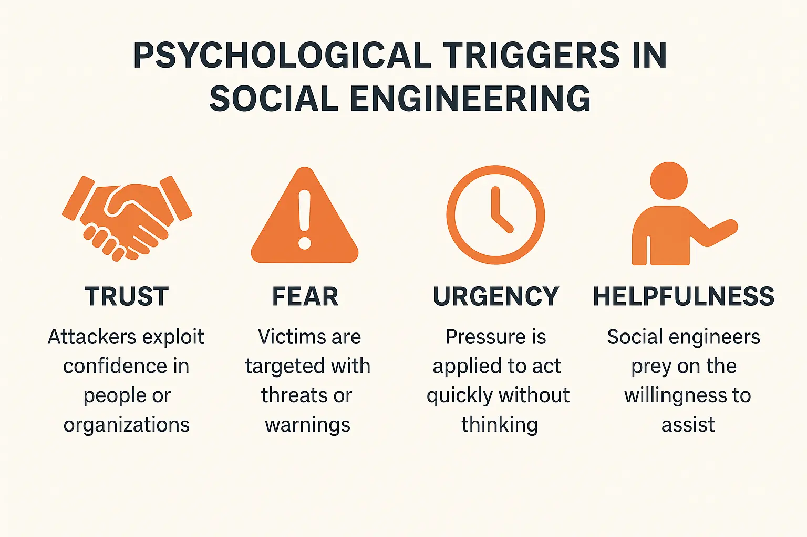

Introduction
As a computer science and engineering student, I've been fascinated by the dramatic evolution of social engineering tactics in cybersecurity. What began as crude phishing emails with obvious grammatical errors has transformed into sophisticated, psychologically-tailored attacks that can fool even security-conscious individuals. As we enter 2025, artificial intelligence has become both sword and shield in this battle for human trust.
Recent news has highlighted how mid-sized companies continue to suffer breaches not through technical vulnerabilities, but through carefully crafted social engineering campaigns targeting employees. In many documented cases, attackers have used AI-generated voice synthesis to impersonate executives, requesting urgent wire transfers during supposed "confidential" processes. These attacks succeed despite robust technical controls, often costing companies hundreds of thousands of dollars and undermining client trust.
These incidents highlight a crucial truth: while organizations focus on hardening technological defenses, humans remain the most exploitable element in any security system. This article explores how AI is transforming social engineering attacks and how organizations can build effective human-centered defense strategies to counter these evolving threats.
The Evolution of Social Engineering in the AI Era
Social engineering, at its core, manipulates human psychology rather than technical vulnerabilities. The integration of AI has dramatically enhanced these attacks in three key dimensions:
1. Scale and Personalization
Traditional social engineering required significant manual effort, limiting its scale. Today's AI systems can generate thousands of personalized attacks, each tailored to the target's specific background, interests, and vulnerabilities scraped from social media and data breaches. What once required weeks of research can now be automated in minutes.
The evolution from manual to AI-powered social engineering attack preparation
2. Credibility and Authenticity
AI-generated content has reached unprecedented levels of sophistication. Modern language models can craft messages that perfectly mimic writing styles, industry jargon, and organizational communication patterns. Voice synthesis and deepfake video technology enable convincing impersonation of trusted figures, creating attacks that pass traditional "gut check" authenticity tests.
3. Adaptive Attacks
The most advanced social engineering campaigns now incorporate adaptive elements. For instance, AI systems can analyze response patterns from targets and adjust their approach in real-time, much like a human social engineer would. This adaptability makes detection significantly more challenging as attacks evolve based on the target's behavior.
Pro Tip
When evaluating potential social engineering attempts, look beyond surface-level indicators like grammar or design. Modern AI-powered attacks excel at these elements. Instead, focus on verifying requests through separate, previously established communication channels, regardless of how authentic the initial message appears.
Modern Attack Vectors
Having investigated hundreds of incidents, I've observed several increasingly prevalent AI-enhanced social engineering techniques:
1. Hyper-Targeted Spear Phishing
Unlike traditional phishing that casts a wide net, modern attacks leverage AI to analyze targets' digital footprints and create incredibly personalized lures. These emails reference specific projects, use relevant inside terminology, and arrive at psychologically optimal times (such as during known high-stress periods).
// Example of threat actor code used for scraping and analyzing target data
async function buildTargetProfile(email) {
const profile = {
personalDetails: await scrapePublicProfiles(email),
professionalContext: await analyzeLinkedInData(email),
recentActivity: await aggregateSocialPosts(email),
connectionNetwork: await mapProfessionalConnections(email),
communicationStyle: await analyzeWritingPatterns(email)
};
return generatePersonalizedAttackVector(profile);
}
2. Voice Synthesis Attacks
With just a few minutes of audio samples readily available from conference presentations, earnings calls, or social media, attackers can generate convincing voice replicas of executives and authority figures. These are deployed in vishing (voice phishing) attacks requesting urgent actions from employees, often combined with manufactured crisis scenarios to inhibit critical thinking.
The process flow of an AI-powered voice synthesis attack
3. Deepfake Video Manipulation
While still relatively resource-intensive, real-time deepfake video calls represent the cutting edge of social engineering. In a recent case I consulted on, attackers used deepfake technology to impersonate a company's CEO in a video call with the finance department, successfully authorizing a fraudulent transfer. The software analyzed the CEO's mannerisms from public appearances and replicated them convincingly.
4. Multi-Channel Orchestrated Attacks
The most sophisticated campaigns I've investigated don't rely on a single vector but orchestrate attacks across multiple channels. For example, an email request might be followed by a spoofed text message and then a deepfake video call, each reinforcing the legitimacy of the others. This coordinated approach exploits our natural tendency to trust information we receive from multiple sources.
// Example structure of multi-channel attack orchestration
class OrchestrationEngine {
constructor(targetProfile) {
this.targetProfile = targetProfile;
this.channels = {
email: new EmailVector(targetProfile),
sms: new SMSVector(targetProfile),
voice: new VoiceVector(targetProfile),
social: new SocialMediaVector(targetProfile)
};
this.attackSequence = this.buildSequence();
}
buildSequence() {
// Determine optimal attack sequence based on target profile
const sequence = [];
// Primary vector selection
const primaryChannel = this.selectOptimalChannel();
sequence.push(new AttackStep(primaryChannel, 'initial_contact'));
// Secondary reinforcement
const secondaryChannel = this.selectReinforcementChannel(primaryChannel);
sequence.push(new AttackStep(secondaryChannel, 'validation'));
// Urgency escalation
sequence.push(new AttackStep(primaryChannel, 'urgency_trigger'));
return sequence;
}
// Implementation details omitted
}
Psychological Triggers and Manipulation Techniques
What makes social engineering so effective is its exploitation of fundamental human cognitive biases and emotional vulnerabilities. Modern AI systems can identify and target these psychological triggers with unprecedented precision:
Key Psychological Triggers
- Authority: We're conditioned to respond to requests from authority figures. AI can now mimic executives, IT security, or government officials with convincing accuracy.
- Urgency: Time pressure inhibits critical thinking. Attacks leverage artificial deadlines and consequences to force quick actions.
- Scarcity: Limited availability of opportunities triggers fear of missing out. Attacks may present time-sensitive benefits that require immediate action.
- Social proof: We look to others' actions for guidance. Attacks often suggest that colleagues or peers have already complied with a request.
- Familiarity: We inherently trust what feels familiar. AI-generated content that mimics known communication patterns exploits this trust.

Primary psychological triggers exploited in modern social engineering attacks
Emotional Manipulation in the AI Era
Beyond exploiting cognitive biases, advanced social engineering leverages emotional manipulation tailored to individual psychological profiles. By analyzing a target's digital footprint, AI systems can identify emotional vulnerabilities and craft messages designed to provoke specific emotional responses that override logical thinking:
- Fear-based manipulation: Triggering security concerns, job security worries, or fear of missing critical deadlines
- Empathy exploitation: Creating fictional scenarios that appeal to the target's known charitable interests or humanitarian concerns
- Recognition and validation: Offering professional recognition or exclusive opportunities that appeal to the target's desire for acknowledgment
- Crisis response: Creating false emergency situations that activate instinctive helpful responses and bypass analytical thinking
Pro Tip
Develop a personal "emotional circuit breaker" for professional communications. When feeling a strong emotional response (urgency, fear, excitement) to a request, pause and implement a mandatory waiting period of at least 15 minutes before taking action. This creates space for your analytical faculties to catch up with your emotional response.
Comprehensive Defense Strategies
Defending against AI-powered social engineering requires a multi-layered approach that addresses both technological and human vulnerabilities:
1. Cultivating Security Awareness 2.0
Traditional security awareness training often fails because it treats employees as a vulnerability rather than as active defense partners. Modern approaches must evolve beyond simple rule-following to developing a security mindset:
- Contextual training: Replace generic training with role-specific scenarios that employees actually encounter
- Microlearning: Deliver brief, focused security lessons at regular intervals rather than annual comprehensive sessions
- Real-world simulations: Conduct sophisticated phishing simulations that include AI-generated content and multi-channel attacks
- Critical thinking emphasis: Focus on developing critical evaluation skills rather than just recognition of attack indicators
Components of effective modern security awareness training
2. Process-Based Security Controls
Implement verification procedures that assume sophisticated social engineering will eventually bypass perimeter defenses:
- Multi-person authorization: Require two or more individuals to approve sensitive actions
- Out-of-band verification: Confirm sensitive requests through a different communication channel than the one used for the request
- Challenge-response protocols: Establish predefined verification questions for sensitive requests
- Circuit-breaker procedures: Implement mandatory waiting periods for high-risk actions
// Example pseudocode for an out-of-band verification system
function requestSensitiveAction(requestDetails, requestChannel) {
// Generate verification code
const verificationCode = generateRandomCode();
// Determine appropriate out-of-band channel
const verificationChannel = selectOutOfBandChannel(requestChannel);
// Send verification code through alternative channel
sendVerificationRequest(verificationChannel, verificationCode);
// Check for timeout
startVerificationTimer(VERIFICATION_TIMEOUT);
// Wait for user input
const userProvidedCode = await promptForVerificationCode();
if (verificationTimedOut()) {
logFailedVerification("timeout");
return VERIFICATION_FAILED;
}
if (userProvidedCode === verificationCode) {
logSuccessfulVerification();
return VERIFICATION_SUCCESSFUL;
} else {
triggerSecurityAlert("Invalid verification code entered");
return VERIFICATION_FAILED;
}
}
3. Technical Countermeasures
While technical solutions alone aren't sufficient, they form an important layer of defense:
- DMARC, DKIM, and SPF: Implement email authentication protocols to reduce email spoofing
- AI-powered content analysis: Deploy systems that can detect AI-generated text and voice through stylometric analysis
- Behavioral analytics: Monitor for unusual patterns in employee actions that might indicate compromise
- Voice verification systems: For organizations where voice authorization is used, implement speaker recognition technology
Building an Organizational Security Framework
Beyond individual defense mechanisms, organizations need a cohesive framework that creates a security-conscious culture:
The Three Pillars of Human-Centered Security
- Psychological Safety: Create an environment where employees feel safe reporting suspicious activity without fear of punishment
- Clear Escalation Paths: Establish well-defined procedures for reporting and responding to potential social engineering attempts
- Security Champions: Identify and empower employees within each department to serve as security advocates

Organizational structure with embedded security champions
Implementing a Response Framework
When a social engineering attack is detected, organizations need clear response protocols:
- Containment: Isolate affected systems or accounts
- Communication: Alert employees to the specific attack vector
- Investigation: Document attack characteristics for pattern identification
- Adaptation: Update training and controls based on new attack vectors
// Example incident response workflow
class SocialEngineeringIncidentResponse {
constructor(incident) {
this.incident = incident;
this.status = 'DETECTED';
this.responseSteps = [];
this.affectedAssets = [];
this.attackVector = null;
}
async initiateResponse() {
// Step 1: Initial containment
await this.containInitialExposure();
// Step 2: Alert security team and stakeholders
await this.notifySecurityTeam();
// Step 3: Document attack characteristics
const attackProfile = await this.documentAttackCharacteristics();
this.attackVector = attackProfile.vector;
// Step 4: Perform wider containment
await this.identifyAffectedAssets();
await this.isolateAffectedAssets();
// Step 5: Organization-wide alert if needed
if (this.requiresOrgAlert()) {
await this.sendOrganizationAlert(this.createAlertMessage());
}
// Step 6: Post-incident analysis
await this.conductPostIncidentAnalysis();
// Step 7: Update defenses
await this.updateDefenseMechanisms();
}
// Implementation details omitted
}
AI-Powered Countermeasures
Fighting fire with fire, organizations are increasingly deploying AI systems to detect and prevent social engineering attacks:
1. AI-Based Detection Systems
Modern security tools use AI to identify potential social engineering attempts:
- Linguistic analysis: Detecting subtle patterns in text that suggest AI generation or deception
- Behavioral analysis: Identifying unusual patterns in user behavior that might indicate compromise
- Anomaly detection: Flagging communications that deviate from established patterns
- Voice authentication: Validating speaker identity through voice biometrics
AI security system dashboard detecting potential social engineering attempts
2. Automated Response and Containment
Beyond detection, AI systems can respond to detected threats:
- Email quarantine: Automatically isolating suspicious messages for further review
- Real-time alerts: Notifying users of potentially deceptive communication
- Connection interruption: Temporarily blocking potentially compromised channels
- Dynamic authentication: Increasing verification requirements when suspicious activity is detected
// AI detection and response system architecture
class AIDefenseSystem {
constructor() {
this.detectors = [
new LinguisticPatternDetector(),
new BehavioralAnomalyDetector(),
new CommunicationFlowAnalyzer(),
new BiometricAuthenticator()
];
this.responders = [
new EmailQuarantineResponder(),
new UserNotificationSystem(),
new ChannelIsolationModule(),
new DynamicAuthLevelController()
];
this.threatStore = new ThreatIntelligenceDatabase();
}
async analyzeCommunication(communication) {
const context = await this.buildContext(communication);
let threatScore = 0;
let detections = [];
// Run through all detectors
for (const detector of this.detectors) {
const result = await detector.analyze(communication, context);
threatScore += result.score;
if (result.detected) {
detections.push(result);
}
}
// Determine appropriate response
if (threatScore > THREAT_THRESHOLD) {
await this.executeResponse(communication, detections);
await this.updateThreatIntelligence(communication, detections);
}
return {
threatScore: threatScore,
detections: detections,
isThreateningContent: threatScore > THREAT_THRESHOLD
};
}
// Additional methods omitted
}
3. Training Enhancement via AI
Increasingly, AI is being used to create personalized security training that adapts to individual learning patterns and risk profiles:
- Personalized training scenarios: Generating role-specific training content
- Adaptive learning paths: Focusing on areas where individuals show vulnerability
- Real-time coaching: Providing immediate feedback when risky behaviors are detected
- Simulation generation: Creating realistic social engineering simulations
Pro Tip
When implementing AI-powered security tools, establish clear communication with employees about how these systems work and what data they analyze. Transparency builds trust and reduces resistance to security measures that might otherwise feel invasive.
The Future Landscape
Looking forward, several emerging trends will shape the social engineering battlefield:
1. Deep Personalization
As AI systems gain access to more comprehensive data about individuals, attacks will become increasingly tailored to specific psychological profiles. This hyper-personalization will make detection even more challenging as each attack may be unique to its target.
2. Real-time Adaptive Attacks
Future social engineering attempts will likely incorporate real-time adaptation, adjusting tactics based on the target's responses during the attack. This dynamic approach will test even well-trained individuals.
Flow diagram of a real-time adaptive attack system
3. Cross-reality Attacks
As augmented and virtual reality become more mainstream in professional settings, we can expect social engineering attacks that bridge physical and digital realities, potentially combining digital deception with physical security breaches.
4. Biometric Spoofing
Advances in AI will enable more sophisticated spoofing of biometric authentication, potentially undermining voice, facial, and even behavioral biometric systems.
5. Trust Architecture
In response to these threats, we're likely to see the development of more sophisticated trust verification systems that combine multiple verification factors and contextual analysis to authenticate communications.
// Future trust architecture concept
class ZeroTrustCommunicationSystem {
constructor() {
this.contextEngine = new CommunicationContextEngine();
this.trustFactors = [
new ContentAnalysisFactor(),
new BehavioralHistoryFactor(),
new CommunicationPatternFactor(),
new BiometricVerificationFactor(),
new DeviceAuthenticationFactor(),
new LocationCoherenceFactor()
];
this.verificationStrategies = new AdaptiveVerificationStrategies();
}
async verifyAuthenticityScore(communication) {
// Build rich context for the communication
const context = await this.contextEngine.buildFullContext(communication);
// Calculate individual trust factors
const factorScores = await Promise.all(
this.trustFactors.map(factor => factor.calculateScore(communication, context))
);
// Apply weighted scoring based on context
const weights = this.contextEngine.determineFactorWeights(context);
const weightedScores = factorScores.map((score, i) => score * weights[i]);
// Calculate final trust score
const trustScore = weightedScores.reduce((sum, score) => sum + score, 0) /
weights.reduce((sum, weight) => sum + weight, 0);
// Determine appropriate verification strategy
const verificationStrategy = this.verificationStrategies.selectStrategy(trustScore, context);
return {
trustScore: trustScore,
factorScores: factorScores,
recommendedVerification: verificationStrategy
};
}
// Additional methods omitted
}
Conclusion
As AI continues to reshape the social engineering landscape, we face a dual reality: the tools of deception are becoming more sophisticated, but so are our defensive capabilities. The human element remains both the primary vulnerability and the ultimate defense in this ongoing battle.
Throughout my career, I've observed that organizations that build a culture of security awareness and establish thoughtful processes consistently demonstrate greater resilience against social engineering attacks. When technical controls, human awareness, and organizational procedures work in concert, they create a robust defense that can withstand even sophisticated AI-powered manipulation attempts.
The most effective defense combines technology, human awareness, and organizational procedures
The future may bring new challenges, but by understanding the psychological foundations of social engineering and adapting our defenses to counter emerging AI capabilities, we can maintain the upper hand in this evolving threat landscape. The organizations that thrive will be those that invest in both technological countermeasures and the human capacity to recognize and resist manipulation.
If you found this article valuable, consider subscribing to our newsletter for more insights on the intersection of cybersecurity, psychology, and artificial intelligence.

Comments (0)
Discussion
Leave a Comment